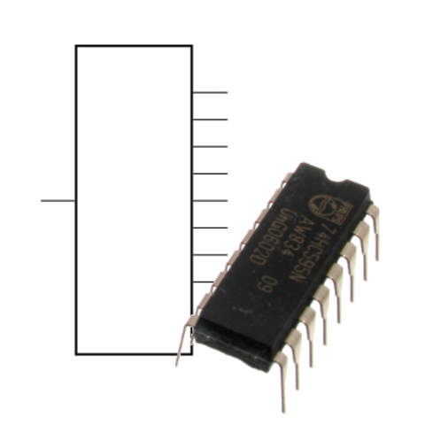
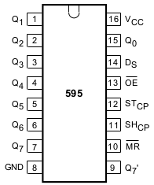

Выходной сдвиговый регистр 74HC595

Микросхема 74HC595 — один из самых распространённых сдвиговых регистров: синхронный, с регистром данных (latch). Она позволяет увеличивать количество выходов микроконтроллера.
Чип преобразовывает входящий последовательный сигнал на 1 пине (Ds) в выходной параллельный на 8 пинах (Qx). Последовательная передача синхронна: для такта используется дополнительный пин (SHcp). Также отдельным пином управляется регистр данных (STcp), что позволяет изменять сигнал на 8 выходах единовременно, когда все данные переданы.

Таким образом образом из трёх пинов микроконтроллера, такого как Arduino, можно получить 8 цифровых выходов. Из регистров 74HC595 можно делать каскады, подключая один за другим (через пин Q7’), и таким образом из всё тех же 3 входящих линий получать 16, 24, 32 и т.д. цифровых выходов.
Используйте сдвиговый регистр для увеличения количества выходов микроконтроллера. Например, для управления большим количеством светодиодов.
Для удобной работы с чипом через Arduino, существует встроенная функция shiftOut.